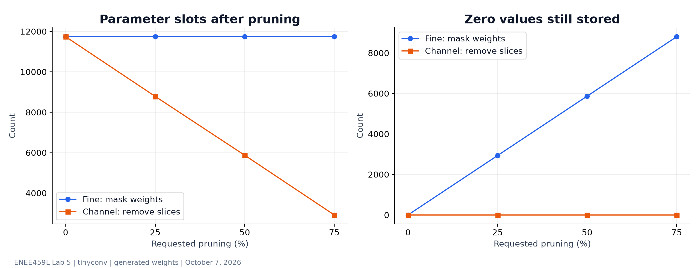
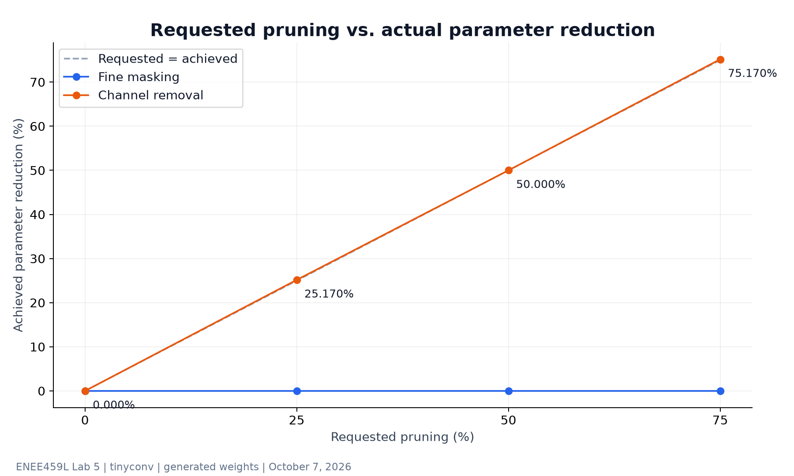
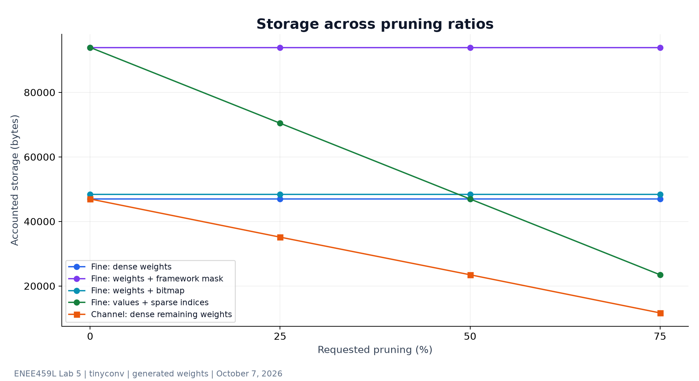
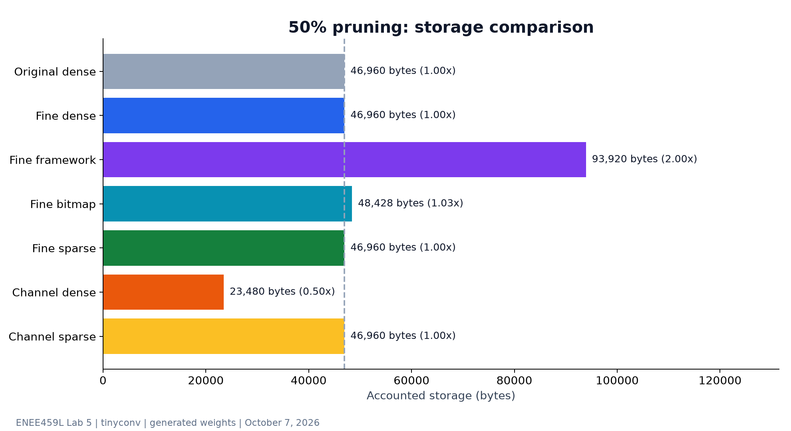
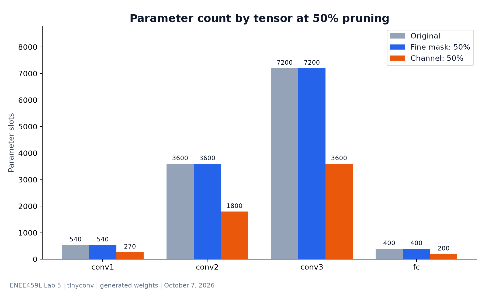
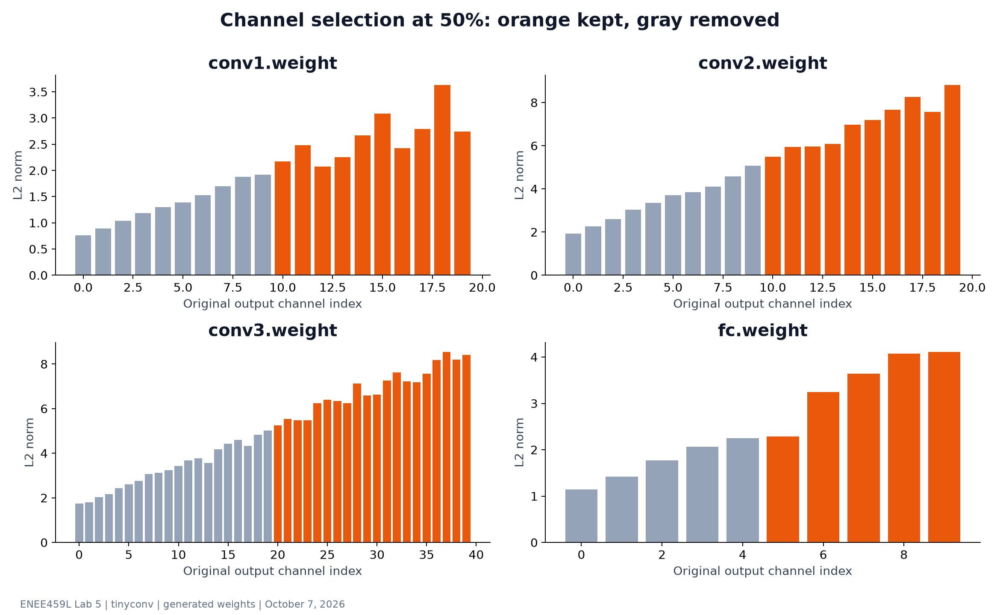
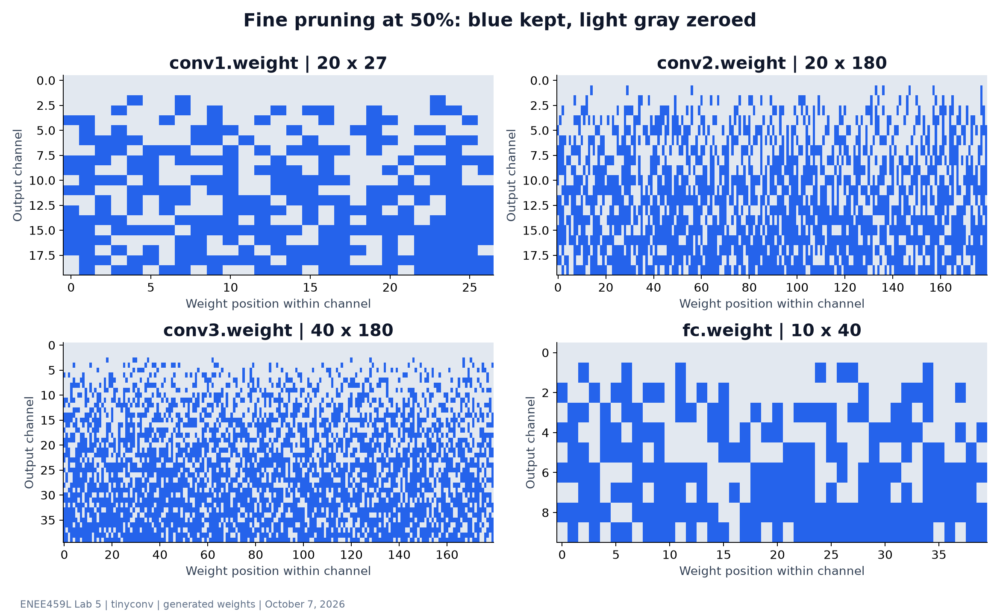
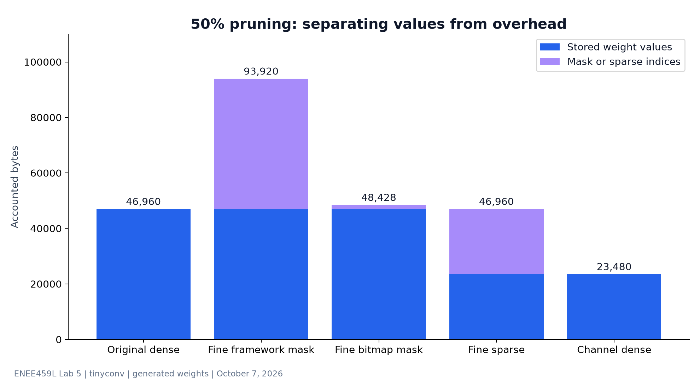

Lab 5 · What actually shrinks?
Detailed pruning charts for ENEE459L · October 7, 2026
Verified: all 12 tests passed on the Jetson; the generated report matched the instructor sample 100%.
Original model: 11,740 parameters and 46,960 FP32 bytes. Fine pruning masks individual weights. Channel pruning removes whole output-channel slices.
The four-ratio sweep comes from the generated report. Additional storage representations are calculated using the tested Lab 5 functions on the same deterministic tensors. No inference latency or accuracy was measured; tensors are pruned independently, so this does not demonstrate a runnable end-to-end pruned network.
Sweep data (CSV) ·
Full results (JSON) ·
Source code 1. Parameters and zeros answer different questions

Masking leaves all 11,740 parameter slots in place. Channel pruning removes slots. Values removed with a channel are absent and therefore do not count as stored zeros.
Vector SVG · PNG2. Requested percentage is not achieved reduction

Fine masking achieves 0% shape reduction at every ratio. Channel counts must be whole numbers; the 10-channel fully connected tensor rounds 25% to three channels and 75% to eight. Total reductions are 25.1704% and 75.1704%.
Vector SVG · PNG3. Storage depends on representation

Dense masked weights stay at 46,960 bytes. A framework mask doubles storage to 93,920. A bitmap adds 1,468 bytes. Sparse storage costs four bytes per FP32 value plus four bytes per index, so 50% sparsity only breaks even with the original dense model. These are accounting estimates, excluding container overhead and sparse row pointers.
Vector SVG · PNG4. 50% pruning does not guarantee 50% storage savings

Channel removal halves dense storage. Framework-masked storage is twice the original. Sparse channel tensors still carry an index for every remaining nonzero, doubling their own dense size.
Vector SVG · PNG5. Where the parameters are

conv3 holds 7,200 of the original 11,740 parameters, followed by conv2 with 3,600. At 50%, every channel-pruned tensor halves its parameter count; fine masking preserves each shape.
Vector SVG · PNG6. Which channels survive

Channel pruning ranks the L2 norm of all weights in each channel. Kept indices are 10–19 in conv1 and conv2, 20–39 in conv3, and 5–9 in fc. This importance score is a heuristic and does not establish accuracy.
Vector SVG · PNG7. Unstructured pruning leaves holes

Each row is an output channel; each column is one weight within it. Exactly half the weights are masked per tensor. Scattered holes do not make the tensor shape smaller or remove the dense kernel workload.
Vector SVG · PNG8. Representation overhead can erase savings

The sparse FP32 representation stores 23,480 bytes of nonzero values plus 23,480 bytes of indices. The framework mask alone costs 46,960 bytes. Bitmap masks round up to whole bytes separately for each tensor.
Vector SVG · PNG